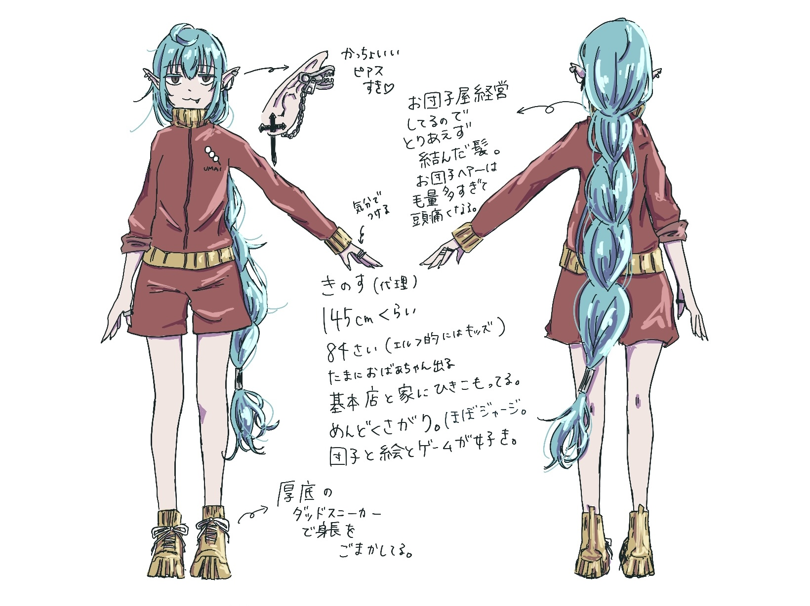

キャラクター設定資料 wip
団子屋に登場するキャラクター達の設定資料です。
ほかのキャラの設定は後程入れていきます…。
表情差分とかも入れたい。
イヴェナ
「きのす」って書いてあるのはイブのことです。元々はkino.の代理としてデザインした子でした。
エルフ族。神のいない土地では、神が誕生するまで代々エルフ族が神代理として神の仕事を請け負います。
イブが団子屋を営む前は、街の人々が供え物として食事の用意をしてくれていました。
義理堅い性格なので、街の人への感謝と『画憑』の情報収集のために団子屋を始めました。
団子屋の仕入れ（もち米とか醤油とか）は街の人達からの供え物で賄ってます。（代わりに食事の提供は断りました）
ただ生活力がないので、朝昼晩全部団子で済ませる癖があり、街の人々が善意でおかずなどを持ってきてくれてます。
朝が苦手すぎて起きないので、担当制で朝に海月ちゃんか鵟が起こしに来てます。
海月ちゃんが担当の日は、髪の毛をみつあみにしてくれています。（鵟が担当の日は、結べないのでおろしてます）